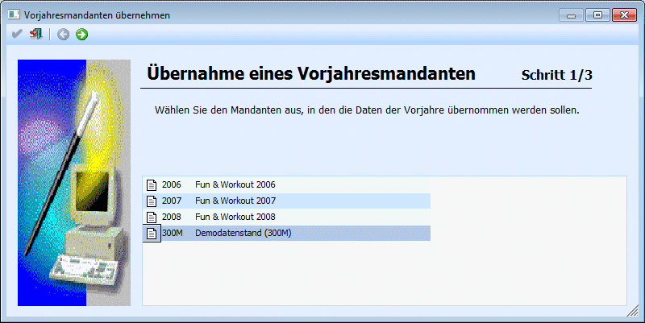
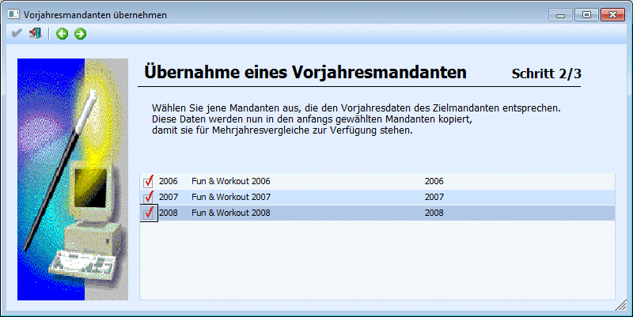
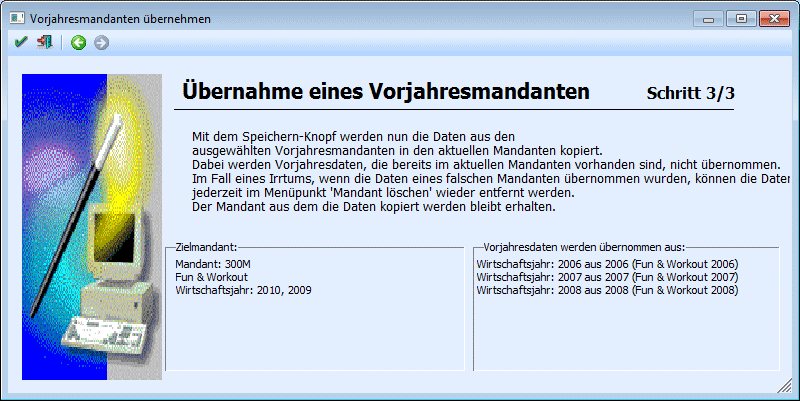

In der WinLine gibt es viele Auswertungen, die einen Mehrjahresvergleich unterstützen. Damit dieser Mehrjahresvergleich auch durchgeführt werden kann, müssen die entsprechenden Mandanten in einer bestimmten Form vorhanden sein, nämlich "1 Mandant besteht aus mehreren Wirtschaftsjahren".
Bis zur Version 7.4 wurde aber pro Wirtschaftsjahr ein Mandant geführt. Somit ergibt sich die Notwendigkeit, mehrere Wirtschaftsjahre (sprich "bis Version 7.4 Mandanten") in einen Mandanten zu vereinigen. Und dieses "zusammenführen" kann über den Menüpunkt
1 System
1 Vorjahresmandanten importieren
durchgeführt werden, wobei ein Wizard durch die 3 Schritte führt.
Achtung:
Die Vorjahresübernahme kann nur für die Mandanten durchgeführt werden, die zuvor einzeln (pro Wirtschaftsjahr ein Mandant) vorhanden sind. D.h. wenn noch Mandanten aus der Version 7.x vorhanden sind, müssen die zuerst einzeln auf die Version 8 umgestellt werden, erst danach können die Mandanten zusammengeführt bzw. übernommen werden. Weiters müssen sich die Mandanten, die zusammengeführt werden sollen, in der gleichen Datenbank befinden. Eine Vorjahresübernahme von einem Mandanten, der in einer anderen Datenbank abgespeichert ist, ist nicht möglich.
Schritt 1

Im ersten Schritt muss der Mandant gewählt werden, der die Vorjahre aufnehmen soll (sprich der Zielmandant). In der Tabelle werden alle Mandanten angezeigt, die auch in den Datenbankverbindungen eingetragen sind.
Der gewünschte Mandant wird ausgewählt, indem der entsprechende Eintrag einmal angeklickt wird.
Durch Anklicken des VOR-Buttons gelangt man in den nächsten Schritt. Durch Drücken der ESC-Taste wird das Fenster geschlossen.
Schritt 2

Im 2. Schritt kann gewählt werden, welche Mandanten übernommen werden sollen. In diesem Schritt erfolgt nun auch die Prüfung der Mandanten, d.h. es werden nur mehr die Mandanten vorgeschlagen, auf die auch zugegriffen werden kann. Neben der Mandantennummer und der Bezeichnung wird auch das Wirtschaftsjahr angezeigt, das im Mandanten gespeichert ist.
Die Mandanten, die übernommen werden sollen werden durch Anklicken der Checkbox in der ersten Spalte der Tabelle selektiert.
Achtung
Bei der Übernahme von Mandanten ist auf die Reihenfolge zu achten. Es kann nicht der Mandant 2001 in den Mandanten 2002 übernommen werden und der dann in den Mandanten 2003, sondern es müssen gleich die Mandanten 2001 und 2002 in den Mandanten 2003 übernommen werden.
Durch Anklicken des VOR-Buttons gelangt man in den Schritt 3. Dabei wird auch geprüft, ob die ausgewählten Mandanten auch wirklich übernommen werden können.
Beispiel
Das WJ 2001 wurde in den Mandanten 2002 übernommen - dieser Mandant 2002 kann nun nicht mehr in den Mandanten 2003 übernommen werden, weil er schon Vorjahreswerte enthält.
Durch Anklicken des ZURÜCK-Buttons kann in den 1. Schritt gewechselt werden. Durch Drücken der ESC-Taste wird das Fenster geschlossen.
Schritt 3

Im 3. Schritt werden nochmals die Einstellungen zusammengefasst, wobei sowohl der Zielmandant als auch die zu übernehmenden Mandanten aufgelistet werden.
Durch Anklicken des ZURÜCK-Buttons kann nochmals in die Auswahl der zu übernehmenden Mandanten gewechselt werden. Durch Drücken der ESC-Taste wird das Fenster geschlossen.
Durch Drücken der F5-Taste wird der Übernahmelauf gestartet. Dabei werden folgende Aktionen ausgeführt:
Übernahme der Tabellen
Alle Tabelleninhalte der ausgewählten Mandanten werden umkopiert, wobei in der jeweiligen Spalte "MESOCOMP" die aktuelle Mandantennummer (Zielmandant) eingetragen wird. In der Spalte "MESOYEAR" wird der Beginn des Wirtschaftsjahres hinterlegt - damit gibt es zwar nur mehr eine Mandantennummer, trotzdem kann zwischen den Wirtschaftsjahren unterschieden werden.
Für Stammdaten bedeutet das, dass die Stammsätze mehrfach vorhanden sind, es kann aber nachverfolgt werden, wie sich die Stammsätze im Laufe der Zeit verändert haben.
Welche Tabellen werden ausgenommen?
Ausgenommen davon sind spezielle Tabellen bzw. Abfragen, die jahresübergreifende Daten beinhalten (weil die Daten bereits im aktuellen Mandanten vorhanden sind). Diese Tabellen sind:
ü Dispo-Tabelle (T014) beinhaltet alle Bestellungen (Einkauf, Verkauf) bzw. Produktionsaufträge
ü OP-Tabelle (T019) beinhaltet alle Offenen Posten und Zahlungen
ü OP-View (V018) beinhaltet summierte OP-Informationen
ü Belegkopftabelle (T025) beinhaltet alle Belegköpfe (Adressen, Einstellungen)
ü Belegmitteltabelle (T026) beinhaltet alle Belegmittelteilszeilen
ü Belegkopfview (V250) beinhaltet die gleichen Daten, wie die Belegkopftabelle
ü Statistiktabelle (T039) beinhaltet alle Statistikzeilen
ü Vertreterjournal (T042) beinhaltet alle Vertreterjournalzeilen
ü Batchnummern (T048) beinhaltet alle Batches, die beim Bestellvorschlag erstellt wurden
ü Kalender (T160) beinhaltet alle Kalendereinträge
ü Korejournal (T246) beinhaltet das Kostenrechnungsjournal
ü Produktionsjournal (T324) beinhaltet alle Produktionsjournalzeilen
ü temporäres Produktionsjournal (T342) beinhaltet temporäre Produktionszeilen
ü Artikelperioden (T308) beinhaltet die Artikelperiodenwerte
ü Sachkonten OP (T328) beinhaltet alle Sachkonten offenen Posten
ü Zahlungsjournal (T351) beinhaltet alle Zahlungen zu Rechnungen / Aufträgen (Anzahlungen).
ü Anlagenentwicklung (T136) beinhaltet die Entwicklung von Anlagegütern
ü LOHN Österreich komplett
ü LOHN Deutschland komplett
ü CRM-Tabellen (T170 bis T185)
ü Tabellen der Projekt- und Beziehungsverwaltung (T060, T062, T063, T064, T077)
Was passiert mit den alten Tabellen?
Die "alten" Daten (bzw. Mandanten) bleiben unverändert erhalten. D.h. nach der Vorjahresübernahme muss entschieden werden, was mit den "alten" Mandanten geschehen soll.
Dabei gibt es mehrere Möglichkeiten:
ü Die Mandanten bleiben in der
Datenbank erhalten und auch im Zugriff
In diesem Fall ist darauf zu achten,
in welchem Mandanten gearbeitet wird - wenn nämlich im falschen Mandanten noch
Arbeiten durchgeführt werden, gibt es keine Möglichkeit, diese Änderungen in den
aktuellen Mandaten zu übernehmen.
ü Die Mandanten bleiben in der
Datenbank erhalten, die Datenbankverbindung wird unterbrochen
In diesem Fall
wird die Datenbankverbindung für die "alten" Mandanten gelöscht. Dadurch kann
zwar nicht mehr auf die Mandanten zugegriffen werden, in der Datenbank sind sie
aber immer noch vorhanden.
ü Die Mandanten werden gesichert und
dann gelöscht
In diesem Fall wird (ggf. vor der Vorjahresübernahme) eine
Sicherung der entsprechenden Mandanten vorgenommen. Danach werden sie über den
Menüpunkt Datei/Mandanten löschen gelöscht.
Kann eine Vorjahresübernahme rückgängig gemacht werden?
Ja, dazu müssen dann die übernommenen Wirtschaftsjahre aus dem Mandanten gelöscht werden. Dies kann über den Menüpunkt Datei/Mandanten löschen gemacht werden. Details dazu entnehmen Sie bitte dem Kapitel Mandant löschen.
Muss eine Vorjahresübernahme überhaupt durchgeführt werden?
Grundsätzlich ja, weil alle Auswertungen mit Vorjahreswerten diese Form des Mandanten (ein Mandant mit mehreren Wirtschaftsjahren) benötigen. Außerdem gibt es z.B. keine OP-Übernahme mehr, wodurch es eigentlich zwingend notwendig ist, einen Mandanten mit den Vorjahresdaten zu führen.